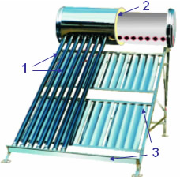
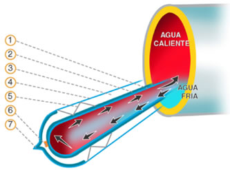

Un calentador solar es un sistema que utiliza la energía gratuita del sol para calentar agua.
Es la opción más ecológica y a largo plazo la más amigable con el bolsillo.
Los calentadores solares de agua constan principalmente de tres partes:

¿Cómo funcionan?
El funcionamiento de los calentadores solares es muy sencillo.
Los sistemas se instalan normalmente en la azotea de la casa, orientados hacia el sur, de tal manera que queden expuestos a la radiación solar todo el día.
¿Cómo circula el agua por todo el sistema?
Esto se logra mediante el efecto denominado “termosifón”, que provoca la diferencia de temperaturas. Es decir; este sistema opera por convección natural, el agua caliente es más ligera que el agua fría y, por lo tanto, tiende a subir. Esto es lo que sucede entre los tubos de cristal al alto vacío y el tanque de almacenamiento, con lo cual se establece una circulación natural
Funcionamiento:

¿Cómo hacemos para mantener el agua caliente?
Precisamente, esa es la función del termo tanque, el cual tiene un recubrimiento de aislante especial (Uretano) para evitar que se pierda el calor generado.
¿Para qué nos sirve?
Para nuestro aseo personal y algunos quehaceres domésticos, requerimos agua caliente. Para ello, normalmente utilizamos un calentador, que conocemos como “boiler” y que funciona con gas. Entonces, si instalamos en nuestra casa un calentador solar, en lugares donde hay mucho sol todo el año como en México, nos sirve para calentar prácticamente toda el agua que requerimos para bañarnos; para lavar la ropa en la lavadora e incluso para lavar los trastes de la cocina.
Un calentador eléctrico utiliza la corriente eléctrica del hogar para elevar la temperatura del agua mediante una resistencia interna.
Son súper prácticos y no requieren instalaciones de gas.
Los calentadores eléctricos instantáneos son unidades compactas de alta ingeniería que constan de:
El funcionamiento es inmediato y automático. El agua fría entra por el tubo de la derecha y recorre el interior del equipo pasando por cuatro cámaras en forma de serpentín, saliendo ya caliente por el tubo de la izquierda de forma constante. El agua se calienta de forma exacta gracias a los sensores que detectan la temperatura del agua en cada etapa y envían la información a la tarjeta electrónica. Esta regula el paso de la corriente a las resistencias para entregar un flujo de agua caliente instantáneo y a la temperatura exacta que tú elijas. Además ahorramos energía porque el sistema es inteligente. En cuanto cierras la llave de agua, los sensores detectan que se alcanzó la temperatura establecida y la tarjeta corta la corriente de inmediato. El equipo queda en modo de espera (stand-by) sin consumir electricidad hasta que vuelvas a abrir la llave.
¿Para qué nos sirve?Nos permiten disfrutar de agua caliente ilimitada sin depender de gas o de que haya sol. Gracias a su tamaño, se pueden instalar en interiores como departamentos o clósets, eliminando las esperas del boiler tradicional y ahorrando espacio valioso en el hogar.
Agua Caliente al Instante
Proporciona instantáneamente agua caliente para abastecer de 1 a 5 puntos de uso en forma simultánea, dependiendo del modelo y del clima. El agua se calienta cuando y por el tiempo que se necesita.
Control electrónico de temperatura
Su tarjeta electrónica le garantiza precisión en el control de temperatura, en fabrica se fija una temperatura de 50C. Dentro de los limites de la tabla de flujos, cualquier temperatura puede ser preestablecida.
Ahorro de energía
El calentador mantiene caliente sólo 4 litros de agua, a diferencia de los calentadores de deposito que mantienen calientes 100 o más litros durante 24 horas al día, siendo que el agua caliente se utiliza sólo una o dos horas al día.
Seguro y Ecológico
El calentador Leyden® es ecológico, opera con energía eléctrica.
Puede instalarse en interiores, sin las restricciones de los calentadores de gas.
Ahorro de espacio
El calentador Leyden® es compacto y ligero , poco mas grande que un porta-folios, puede instalarse prácticamente en cualquier lugar, se logran ahorros en construcción. Sus dimensiones son 45 x 30 x 14cms. pesa únicamente 13 Kg.
Inoxidable
No se oxida , ni se pica. El gabinete y el tanque están fabricados en acero inoxidable, lo cual garantiza un servicio duradero y una excelente apariencia.
Ideal en zonas de alta corrosión como la costa y los yates.